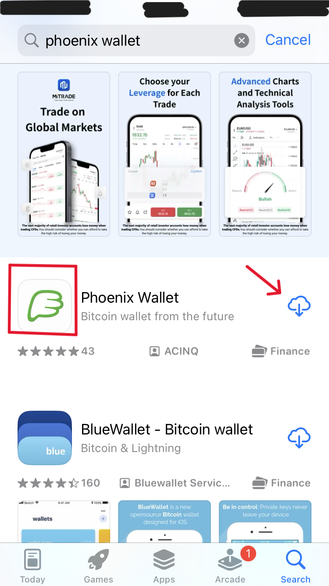
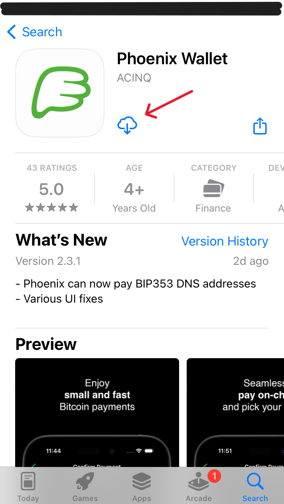
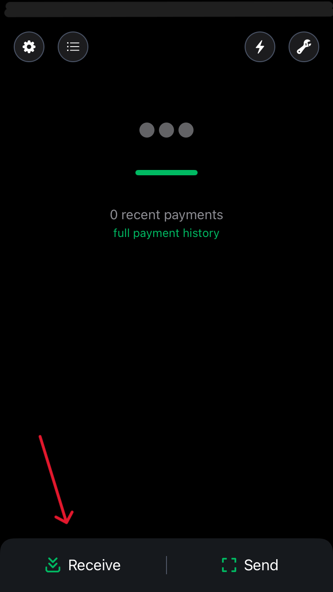
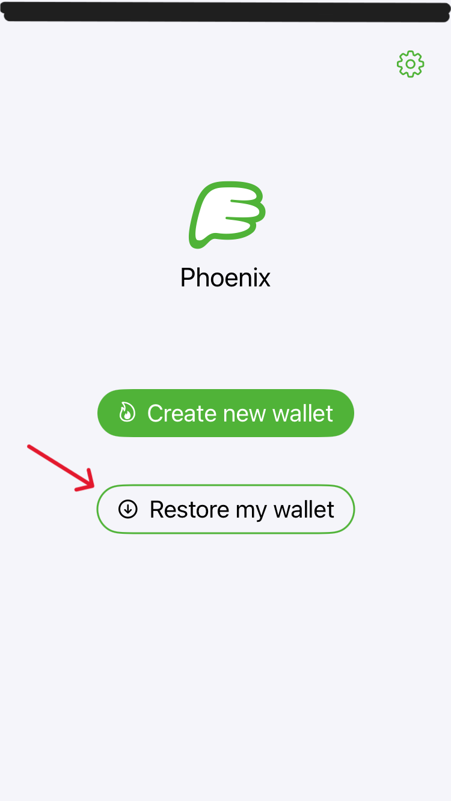
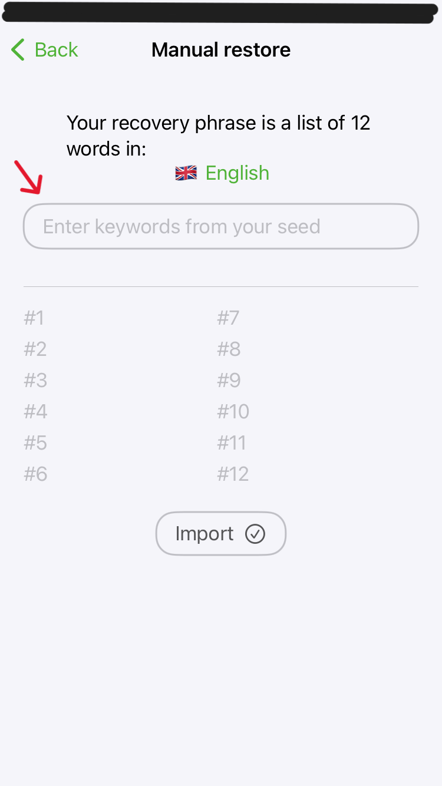

Stufe 2.1: Download und
Installation
In diesem Guide nutzen wir Phoenix Wallet. Guides für Green Wallet und Blue Wallet folgen später.
Wenn du weißt, wie man eine App auf iPhone, Android oder einem anderen Smartphone installiert, kannst
du zu Schritt 4 springen.
Schritt 1:
Gehe in den App-Store / Play-Store
Schritt 2:
Tippe "phoenix wallet" in die Suche und drücke auf "Suchen"
Schritt 3:
Drücke "Download" und danach "Öffnen"


Schritt 4: Orbot-App installieren
Die Orbot-App erlaubt dir, das Tor-Netzwerk zu nutzen und später in diesem Guide deinen Electrum-
Server zu verbinden.
Das ist nicht zwingend für Transaktionen nötig, verbessert aber die Privatsphäre. Es kann allerdings
auch zu Verbindungsproblemen führen, wenn das TOR-Netzwerk nicht erreichbar ist.
Installiere die App genauso wie oben, suche diesmal nach "orbot".
Stufe 2.2: TOR aktivieren
TOR sollte aktiviert sein, um deine IP-Adresse vor deinem ISP (Internet Service Provider) sowie
anderen Beobachtern zu schützen. Wenn während einer Zahlung Verbindungsprobleme auftreten, kann man
TOR deaktivieren und die IP-Adresse gegenüber dem Phoenix-Node (ACINQ) sowie weiteren Dritten
offenlegen.
Eine einmalige Deaktivierung von TOR kann eine IP-Leak verursachen, die die Wallet dauerhaft einer
Person zuordnen kann.
Schritt 1:
Überspringe oder lies die Einführung, bis du die ersten Buttons siehst.
Schritt 2:
Drücke das kleine Zahnrad oben rechts
Schritt 4:
Gehe zu "Tor"
Aktiviere den Schalter für Tor.
Stufe 2.3: Electrum-Server
verbinden
Wenn du unseren Node-Guide abgeschlossen hast (stark empfohlen), hast du Zugriff auf deinen eigenen
Electrum-Server. Wenn du das nicht getan hast, kannst du zu Stufe 2.4 springen, um den Wallet-Recovery-Prozess zu testen.
Wenn du keinen eigenen Electrum-Server verwendest, lernt der öffentliche Server deine aktuellen und
zukünftigen Adressen sowie deine Transaktionshistorie. Das gefährdet nicht deinen privaten Schlüssel,
reduziert aber deine Privatsphäre.
Schritt 1:
Gehe zu Electrum Server
Schritt 2:
Gehe zu "Modify"
Schritt 3: Electrum-Server-Adresse holen
Gehe in deine MyNodeBTC-Oberfläche und klicke auf Electrum Server
Schritt 4:
Kopiere die Adresse aus "Hostname" oder "CLI Command". Sie muss auf ".onion" enden.
Schritt 5:
Trage die Onion-Adresse in das Server-Feld ein ("example.com") und nutze Port 50002. Dann auf
"save" drücken.
Schritt 6:
Zurück zur Wallet-Erstellung und den Anweisungen folgen.
Stufe 2.4: Wallet-Wiederherstellung
testen
Nachdem du die Wallet erstellt hast, testen wir die Wiederherstellung.
Schritt 1:
Oben links das Zahnrad drücken, um in die Einstellungen zu kommen.
Schritt 2:
Klicke auf "recovery phrase" und lies den angezeigten Text.
Schritt 3:
Um sicherzugehen, dass du den privaten Schlüssel korrekt notiert hast, klicke auf
"Show seedphrase / recovery phrase" und notiere die Wörter an einem sicheren Ort.
Du musst sie behalten, sonst ist dein Guthaben verloren.
Dann setze die Häkchen unter "legal", dass du den privaten Schlüssel gesichert hast und
dir bewusst bist, dass das Guthaben verloren ist, wenn du das Handy verlierst. (Merke: private key =
seedphrase = recovery phrase = seed = secret)
Diese Wallet ist wie dein tägliches Portemonnaie. Du legst nur so viel Geld hinein, wie du im
schlimmsten Fall verlieren würdest, wenn etwas passiert.
Schritt 4: Bitcoin empfangen
Jetzt legen wir ein wenig Bitcoin in die neue Hot Wallet. Der erste Betrag sollte klein sein.
Dafür brauchst du Bitcoin, die du kaufst, gekauft hast oder die dir jemand sendet.
Drücke "receive", wische nach rechts, um die On-Chain-Adresse zu erhalten, und scanne den QR-Code.
Der Sender legt dann fest, wie viele Sats gesendet werden. Wenn du den QR-Code nicht scannen kannst,
kopiere die Bitcoin-Adresse, wie durch den roten Pfeil markiert.


Schritt 5:
Teste die Wiederherstellung, indem du die App löschst und dann neu installierst, um die Wallet
wiederherzustellen.
Der kleine Betrag sollte dann in deiner Balance sichtbar sein.
HINWEIS: Das Seed-Wort wird eingetragen, wenn du die Leertaste drückst. Achte darauf, dass keine
Rechtschreibfehler vorhanden sind.
Die App schlägt außerdem Wörter aus der Wortliste vor.




Wenn die Sats erscheinen, bedeutet das, dass du die Wallet wiederherstellen kannst, falls du das
Handy verlierst oder die Wallet in eine andere App importieren willst.
Optional kannst du jetzt BTC an eine andere Wallet von dir oder an uns senden, um die Website zu
unterstützen.
⚡ Lightning: Nutze die Textadresse ruddywall05@walletofsatoshi.com oder den QR-Code.

Stufe 3: Einführung in Seed-Storage
Terminologie
Im Bitcoin-Kontext gibt es viele Begriffe für den privaten Schlüssel selbst und für die Systeme,
die ihn vor Verlust schützen sollen.
Die Strategie, mit der du den privaten Schlüssel schützt, nennt man Backup- oder Seed-Storage-
Strategie.
Jetzt machen wir ein Gedankenexperiment zur Backup-Strategie.
Die Aufgabe
Wir haben eine Information, die wir nicht verlieren wollen. Wir müssen ein System entwickeln, das
das Backup möglichst resilient macht und vor Außenstehenden sowie natürlichen Einflüssen
schützt.
Die Situation
Aktuell ist unser Backup
ein Stück Papier offen auf dem Schreibtisch.
Die Angriffsvektoren
- Wir werfen das Papier versehentlich weg (Nachlässigkeit)
- Jemand kommt ins Zimmer und entsorgt das Papier (Nachlässigkeit) oder stiehlt den
privaten Schlüssel (Diebstahl)
- Je nach Tinte kann Wasser den Text unlesbar machen
Gewöhne dir an, Schwächen im System zu erkennen und Lösungen zu finden.
Gehen wir die Liste der Angriffsvektoren durch.
Die Abwehr
Szenario 1 lässt sich leicht lösen: Wir legen das Papier in einen Ordner und
geben ihm einen Platz im Regal. Zusätzlich macht es Sinn, eine zweite Kopie des Backups zu
erstellen und an einem anderen Ort zu lagern.
Du entscheidest, wie viele Backups es gibt und wie weit diese voneinander entfernt lagern. Das
kann von einer zweiten Kopie im gleichen Ordner bis zu einem anderen Ort reichen.
Szenario 2 führt eine weitere Person ein. Das kann ein Familienmitglied sein oder
ein Eindringling. Für die Einfachheit nehmen wir an, dass diese Person den privaten Schlüssel
nicht kennen soll.
Natürlich solltest du Türen und Fenster schließen. Trotzdem könnte jemand in dein Zuhause
eindringen. Je nach Gesetzgebung bist du in der Verteidigung eingeschränkt. Statt physischer
Abwehr durch Machtprojektion könnte die
Information versteckt oder verschlüsselt werden, sodass sie wie ein gewöhnlicher Hinweis
aussieht.
Das wirkt vielleicht übertrieben für eine tägliche Wallet mit wenigen Sats, aber solche Übungen
ohne große Summen führen zu besserer Ausführung und weniger Kopfschmerzen, wenn du dein
persönliches System entwickelst.
Szenario 3 Nutze wasserfeste Tinte, eine Folie oder ein anderes Material, um die
Information vor Wasser, Feuer und anderen Elementen zu schützen.
Abschlussgedanken
Die Aufbewahrung des privaten Schlüssels ist ein großes Thema, das wir gemeinsam vertiefen
werden, während du dich durch die Sicherheitsstufen arbeitest.
Für jetzt solltest du dir
angewöhnen, Angriffsvektoren zu erkennen, die dich deinen privaten Schlüssel kosten könnten,
und Gegenmaßnahmen zu entwickeln.
Im nächsten Guide lernst du, wie du eine Cold Wallet erstellst und größere Beträge sicher
verwahrst.
Klicke hier für den nächsten Guide: 3. Cold Wallets